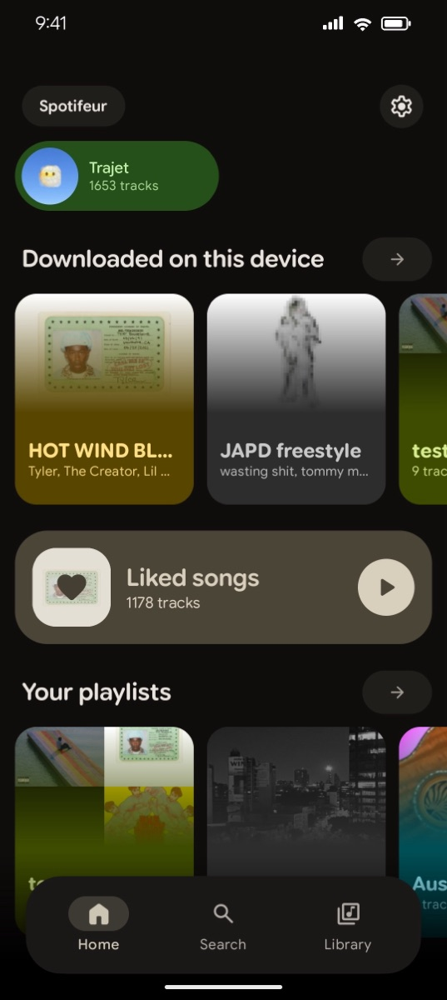
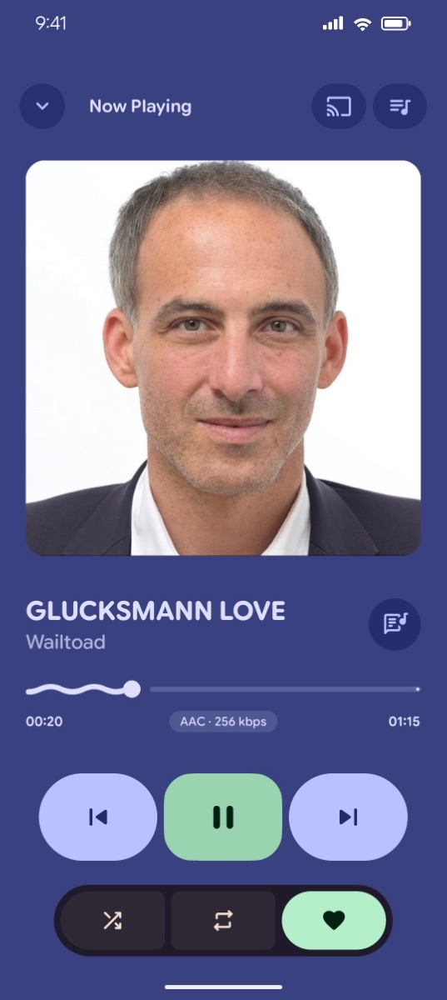
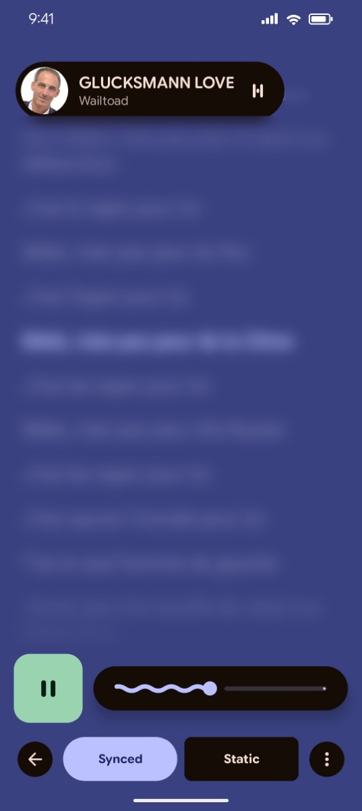
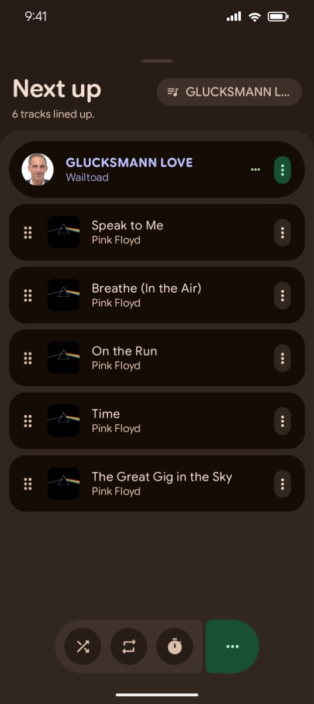
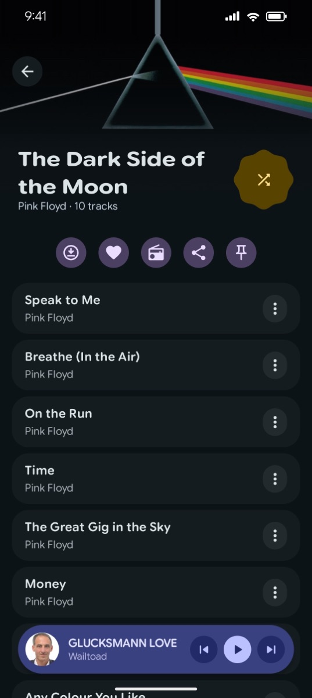
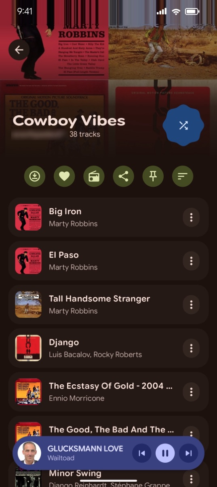
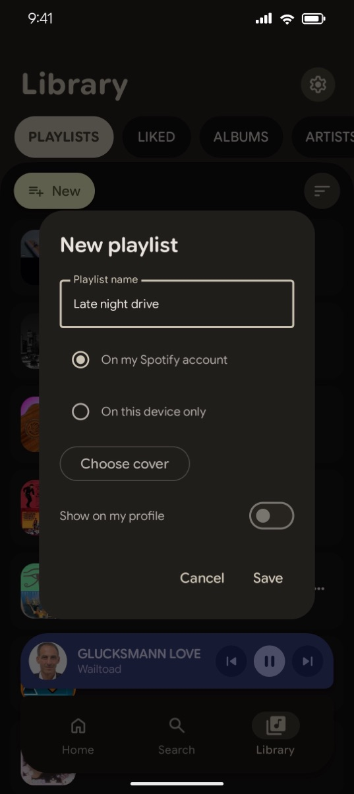
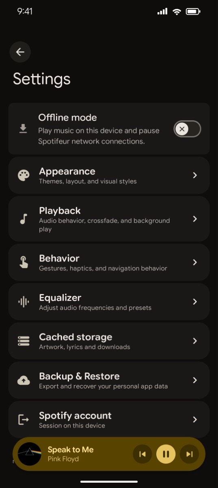
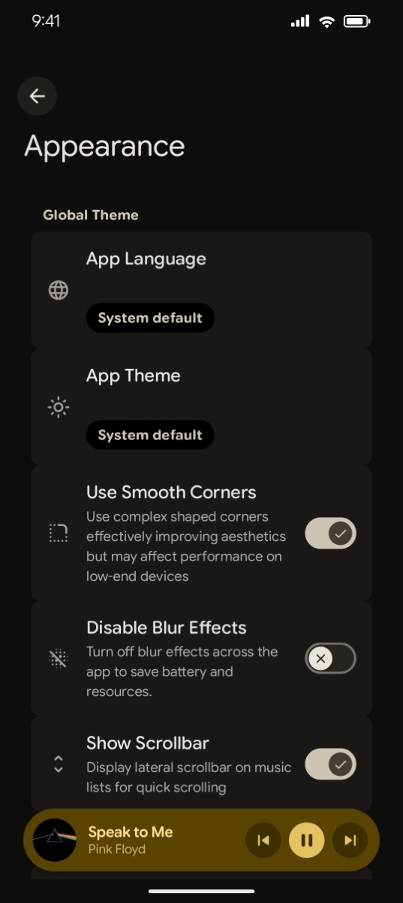

Home and library
Pinned items first, then your playlists, albums, artists and saved tracks. Pins stay on the device.
An open-source Spotify client for Android, for music only.
Spotifeur signs in to your Spotify account and plays your library with Spotify's own Android protocols and audio engine. It has no podcasts, videos or Canvas loops, a Material 3 Expressive interface, and more settings than the official app.









Spotifeur uses the same services as the official Android app. What you save, follow or edit in one shows up in the other.
| Official app | Spotifeur | |
|---|---|---|
| Library, playlists, saved tracks, albums, artists | Yes | Yes, same account |
| Full-length playback, seek, queue, shuffle, repeat | Yes | Yes, with Spotify's audio engine |
| Search, radios, synced lyrics | Yes | Yes |
| Create and edit playlists, custom covers | Yes | Yes |
| Offline downloads and cache | Yes | Yes, cache size and prefetch depth adjustable |
| Podcasts, audiobooks, videos | Yes | No |
| Canvas loops, promoted content | Yes | No |
| Themes, player style, navigation bar, equalizer, gestures | Few options | Many options |
Pinned items first, then your playlists, albums, artists and saved tracks. Pins stay on the device.
Seek bar, queue, shuffle, repeat, sleep timer, and the codec and bitrate of the current track if you want them.
Synced lyrics from Spotify, with an immersive mode. When Spotify has none, Spotifeur can look them up on LRCLIB.
Reorder by dragging, swipe to remove, optional history of played tracks.
Create a playlist on your account or on the device, rename it, set a cover from your photos, publish it on your profile, add Spotify's recommendations.
Album and artist pages, related artists, and radios from a track, an album, an artist or a playlist.
Download albums, playlists or tracks. Recent and upcoming tracks are kept in an encrypted cache of 512 MB to 32 GB, up to 20 tracks ahead.
Media notification, lock screen and Bluetooth controls, resume when headphones reconnect.
Presets, custom presets, bass boost, virtualizer and loudness.
Light or dark theme, colors from the album art, floating or full-width navigation bar, collage patterns, blur on or off, English or French.
Login5 and ClientToken, as in the official Android app. You sign in with a code sent to your email address. The session is encrypted with Android Keystore.
Playlist4, Collection v2, Extended Metadata and Spotify's search service. No public Web API, no App Remote, no WebView.
HLS manifests processed by Spotify's own native engine, loaded unchanged from the official APK that you supply when you build.
Everything learned along the way is written up in the protocol notes, which can be read without the code.
The app talks to Spotify, and to LRCLIB for lyrics Spotify does not have (title, artist, album and duration only).
The email-code sign-in does not use a password. The session credential stays on the device, encrypted.
You build the APK from the source and your own copy of the official Spotify APK. The build checks its hashes.
Spotifeur is not affiliated with Spotify. Using a third-party client may break Spotify's terms of service. Use it at your own risk.
Yes. Spotifeur shows your library and plays what your account is allowed to play. It was tested with a Premium account; free accounts were not tested.
No. At build time you supply the official APKM, version 9.2.0.26, and Spotify's audio engine is packaged inside Spotifeur.
The audio engine is Spotify's code and cannot be redistributed. You build Spotifeur yourself with your own copy of the APKM.
ARM64 phones and tablets with Android 8.0 or later. The engine does not run on x86 emulators or 32-bit devices.
Yes, for saved tracks, albums, followed artists and playlists. Pins stay on the device.
No. Downloads stay encrypted and are only processed by Spotify's engine at playback time. Nothing your account does not have is unlocked.